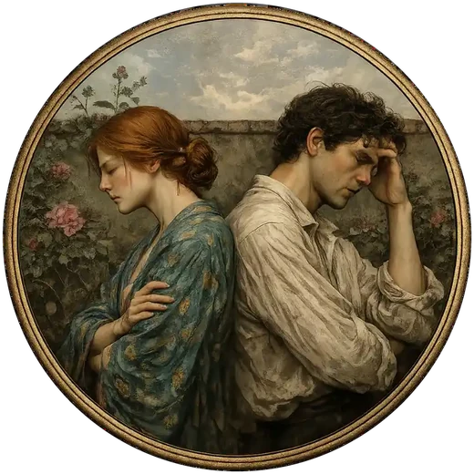
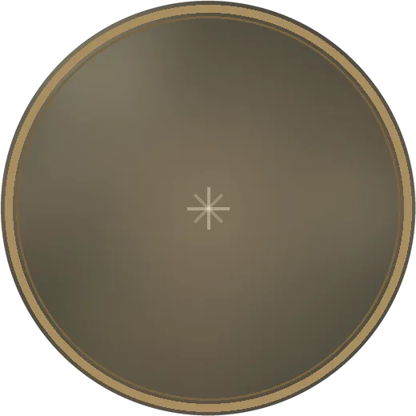
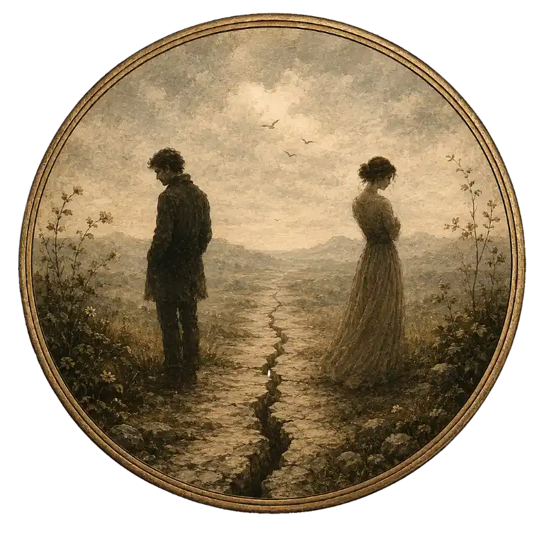
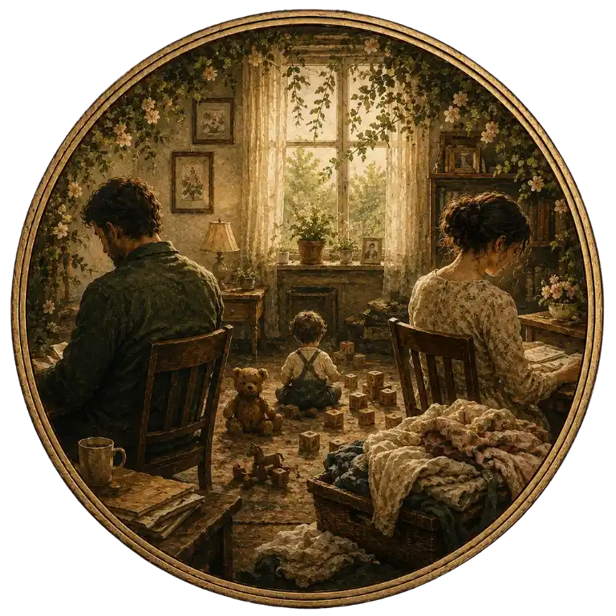
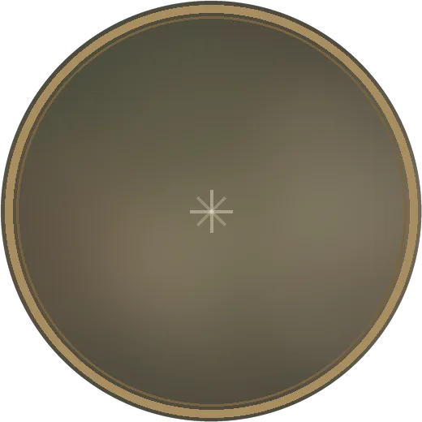
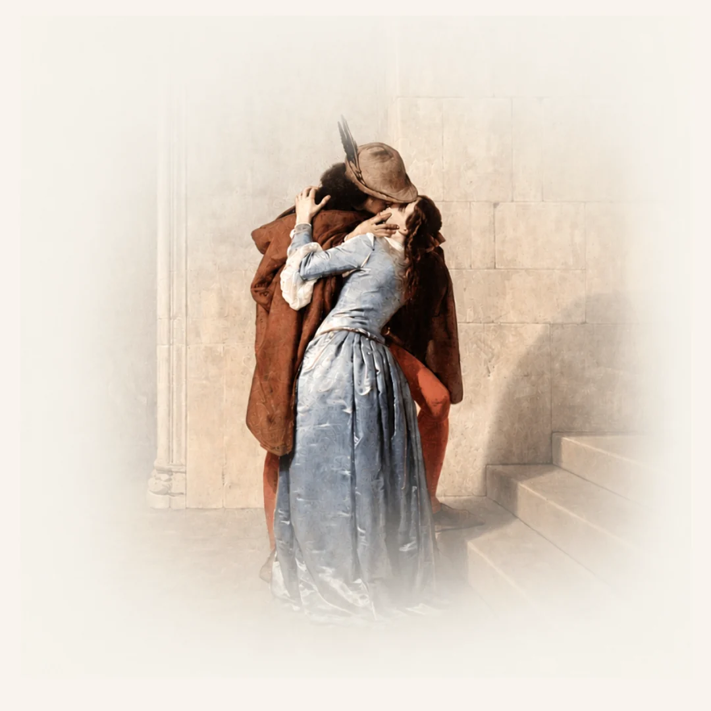
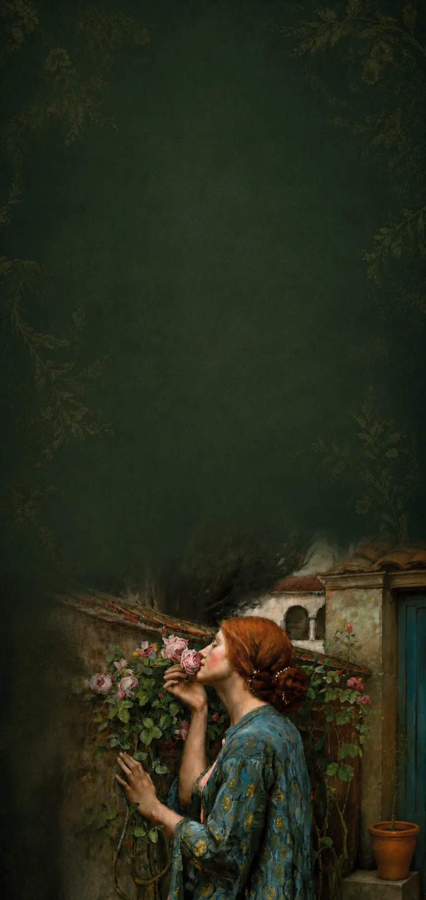

A gente tenta conversar, mas sempre termina em briga.
Você começa querendo resolver. Termina mais longe do que antes.
andré borges · psicólogo · crp 06/215883
Terminam por não saber o que fazer
com o amor que ainda está ali.
Psicólogo especialista em relacionamentos. Aqui o amor que ainda existe ganha espaço para ser compreendido. Atendimento individual ou em casal, online para o mundo e presencial em Pirassununga/SP.
E nunca tivemos tantas pessoas tão perdidas dentro dos relacionamentos.
Isso é red flag, corre.
Quem ama de verdade não faz isso.
Esse relacionamento é tóxico.
Se tem briga, não é amor saudável.
Não tem mais salvação.
Termina antes que seja tarde.
O problema não é falta de informação.
É excesso de opinião sobre algo que só você pode sentir e entender.
Muitas pessoas trazem esses relatos nas primeiras sessões.

A gente tenta conversar, mas sempre termina em briga.
Você começa querendo resolver. Termina mais longe do que antes.
Sinto que a gente se afastou.
Não foi uma briga, não foi um momento. Foi acontecendo — e você não sabe como voltar.

Às vezes me pergunto se sou eu o problema.
Você analisa, tenta entender, coloca a culpa em si. E mesmo assim não chega em lugar nenhum.

A gente repete os mesmos conflitos.
Muda o assunto, a mesma briga. E uma parte de você já começa a achar que sempre vai ser assim.
Vale investir ou já passou do ponto?
Você não quer desistir. Mas também não aguenta mais ficar no meio do caminho.
Estou carregando isso sozinha.
Você cuida, resolve, segura. E ninguém parece perceber o quanto isso pesa.

Quando o filho chegou, a gente parou de ser casal.
A vida encheu. E o espaço que era de vocês dois foi desaparecendo sem que ninguém percebesse.

Durmo do lado dele todo dia e me sinto completamente só.
Ele está ali. E mesmo assim falta alguma coisa que você não consegue nem nomear.
Se você se reconheceu em alguma dessas frases, talvez seja hora de conversar.
As pessoas ainda se amam, mas não sabem se comunicar, não sabem atravessar o conflito, não sabem o que fazer quando o outro se fecha, quando a rotina engole tudo, quando o distanciamento vai crescendo sem que ninguém perceba exatamente quando começou.
O amor está lá. O que falta é um espaço para entendê-lo.
Não estou aqui para dizer o que você deve fazer com o seu relacionamento.
Estou aqui para que você chegue à sua própria resposta — com clareza e sem pressa.

Entendo o casal como sistema: homem e mulher, com a mesma profundidade. Esse olhar amplia tanto o trabalho individual quanto o de casal.
Ninguém chega ao relacionamento sem bagagem. Você chega com a sua história, o que aprendeu sobre amor e sobre se relacionar, a forma como demonstra, como se comunica, os padrões que se repetem sem que você perceba. Entender isso muda o que acontece entre vocês.
Quando um muda, o outro se move — queira ou não. O que você sente, evita ou transforma em você já reescreve o que acontece entre vocês. Por isso começo sempre pelo individual.
São situações distintas e exigem caminhos distintos. Relacionamento desgastado tem caminho. Relacionamento abusivo exige saída — e isso precisa ser dito com clareza quando é o caso.
Falo com homens sem julgamento. Quando ele se sente entendido, a dinâmica entre vocês já começa a mudar.
o que costuma acontecer
A maioria das histórias que chegam até mim não termina aqui.
Relacionamentos desgastados não são relacionamentos mortos. São relacionamentos que perderam o caminho e que, com o espaço certo, conseguem se reencontrar.
Meu trabalho é fundamentado na abordagem existencial e integra elementos da EFT — Terapia Focada nas Emoções. O resultado não é uma receita pronta. É um processo de reconhecimento e mudança real.
Vocês param de ficar em loop e começam a entender o que está por trás dos conflitos — dentro de cada um e entre vocês.
O espaço terapêutico cria condições para que o que precisava ser dito finalmente seja — sem que vire mais uma briga.
Cada um entende o seu papel no ciclo sem se destruir por isso. Isso já transforma a dinâmica.
Antes de reconectar com o outro, cada um volta a compreender o que sente, quais são suas necessidades e o que tem evitado em si mesmo.
É o que acontece quando os dois se dispõem a entender a dinâmica da relação — e a fazer diferente o que sempre foi feito igual.
"a minha abordagem começa pela escuta."
Não cheguei aqui pela teoria. Cheguei porque tive que aprender a me relacionar do zero, com tentativas e custos reais. Anos de terapia, de processos internos, de trabalho em mim mesmo.
Cresci sendo o cara que as pessoas procuravam para conversar. A psicologia me encontrou muito antes de eu entrar numa faculdade.
Hoje sou especialista em psicologia dos relacionamentos e psicologia financeira, e entendo essas palavras no sentido mais amplo. Relacionamento não existe isolado. O que se passa no trabalho, nas finanças, no sentido que a pessoa dá à própria vida, tudo atravessa o que duas pessoas constroem juntas.
Continuo em formação constante: especializações, supervisão, leitura, terapia pessoal. Para mim, ser psicólogo é nunca parar de estudar: cada casal que chega exige um olhar novo, e isso só se sustenta com dedicação ao aperfeiçoamento contínuo.
Minha abordagem é existencial e integra elementos da EFT - Terapia Focada nas Emoções. Crio um espaço seguro para que cada paciente integre suas emoções, entenda seus padrões e chegue à sua própria resposta, com clareza, sem pressa e sem julgamento.
Sou casado, pai, e atendo em Pirassununga/SP e online para todo o Brasil.
Caminhos diferentes, o mesmo cuidado em cada sessão. Escolhemos juntos o ponto de partida.
Para quem quer entender o que está acontecendo consigo — dentro ou fora do relacionamento. Quando você muda, a dinâmica entre vocês já começa a mudar também.
Uma modalidade que combina sessões individuais com cada um e sessões juntos, conduzidas por mim. Cada um entende o próprio lado primeiro. Depois, o que precisa ser dito entre vocês ganha um espaço real para acontecer.
Você sabe que algo precisa mudar, mas não sabe se o problema é seu, do relacionamento, ou dos dois. Não sabe se começa sozinha ou com ele. Esta sessão única de 50 minutos existe para isso: entender onde você está e qual caminho faz sentido para o seu caso.
Se a sua não está aqui, mande no WhatsApp. Respondo pessoalmente.
Sessões semanais de 50 minutos. Trabalhamos os padrões que você carrega — e como eles afetam o que acontece ao seu redor, inclusive nas relações.
Você pode começar sozinha. Entender o próprio padrão já transforma a dinâmica da relação. O atendimento individual é tão eficaz quanto o de casal em muitas situações.
Sim. Mesma estrutura e qualidade do presencial, por videochamada em ambiente seguro. Disponível para todo o Brasil.
É exatamente o que a sessão de clareza responde. Relacionamentos desgastados e relacionamentos abusivos são situações diferentes, e exigem abordagens diferentes. Te ajudo a entender em qual ponto você está.
Semanais, com 50 minutos. A frequência pode ser ajustada conforme o andamento.
Entre em contato pelo WhatsApp através do botão de agendamento, vamos encontrar um horário para você.

O relacionamento que você quer ainda existe.
Mas precisa de atenção antes que a distância vire permanente.
resposta pessoal · sigilo profissional
Mas precisa de atenção antes que a distância vire permanente.
resposta pessoal · sigilo profissional